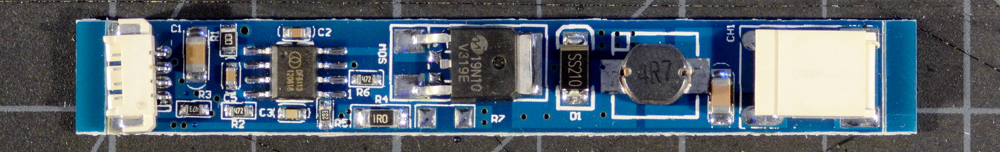

The "Unboosty-Blue" Kit for Thinkpads
for the X60, X60s, X60t, X61t, X61s, and X61t in particular
| unboosty blue | notes | dim range | ~cost |
|---|---|---|---|
| PWM-mode mod |
buck, 8-12V output 3 LED segments, 9.6V nominal |
8:1 | $12-17 |
|  | |||
|
|||
This appears to be another vendor's direct copy of the Unboosty... or is the Unboosty a copy of this kit? It's the same circuit (using the DF6113 boost controller IC [datasheet] as a low-side buck-down converter!), but on a different PCB using a smaller inductor and configured to put out lower current by default. It expects to drive a constant-current LED string at between 8 and 12 volts such as the usual 9.6V constant-current strips that can be trimmed in groups of three LEDs.
Like the Unboosty, this kit requires modification, such as the PWM mod below, to work with a Thinkpad. The modification process I've come up with for this board is slightly easier and more compact as compared to the original Unboosty. If you can solder SMD, this is currently my favorite kit.
Update and Warning: Like the original Unboosy, these boards can flicker noticably with the slightest shift in input voltage, eg with processor load, regardless of the mod used. There's no correcting the problem no matter how fancy the mod--- it's a consequence of lobotomizing a boost controller to use it in buck mode.
Above: Schematic of stock, unmodified "Unboosty-Blue" LED driver board
The PWM mod alters the driver board to use the Thinkpad's PWM brightness signal as a direct backlight switching control. The PWM frequency is 200Hz unless the OS changes it. If backlight flicker bothers you, definitely use one of my continuous-mode driver boards instead.
Above: Schematic of the Unboosty-Blue driver board modified for PWM-mode operation with a Thinkpad. Red marks new or altered components and connections, light gray shows removed connections and components.
Specific package recommendations above are known to fit, but feel free to mix whatever surface mount or through-hole components are actually convenient. Resistor values should be 1% tolerance for best results.
After modding, the DIM input is now the board enable and the ENA input is now a PWM-compatible brightness input (they're mostly interchangeable really, but this arrangement is slightly preferable). The board will put out approximately 320mA at max brightness. Minimum brightness depends somewhat on PWM frequency; the PWM signal switches the chip enable and the converter has some turn-on lag. At the BIOS default of 60Hz, min brightness is about 40mA average for an adjustment range of 8:1.
If there's no space to stash the LED driver PCB somewhere in the lid (or if you simply find adding the extra board inelegant), the driver PCB as modified above can be trimmed as indicated below to fit directly onto a stock Thinkpad inverter board. We only need to move the output filtering capacitor first.
Above: Trimming the Unboosty-Blue board down to a size appropriate for grafting onto a Thinkpad inverter board requires relocating only the output capacitor (red arrow), then parting the board at the dotted red lines.
Above: The locations to clear solder pads when preparing the Unboosty-Blue board for trimming are circled in red. Inductor L1 has been removed for clarity; it's not necessary to remove the inductor to make the new pads.
Above:Unboosty-Blue LED driver board with completed PWM mod, trimmed so that it can be soldered onto a Thinkpad inverter. This board has also been fitted with a low-profile inductor. Mouse over the image to highlight and label the connection points.
That's all the trimming necessary to fit onto a tablet-model inverter, but if we're adding this board to a non-tablet inverter, we'll need to file down the top and bottom edges by about a millimeter. It might also be necessary to swap for a lower-profile inductor. See the section about dimensional restrictions on the inverter page. Otherwise, the trimmed driver PCB is ready to be grafted onto an existing Thinkpad backlight inverter.
{kind=link}
{kind=link}
{kind=link}
{kind=link}
{kind=link}